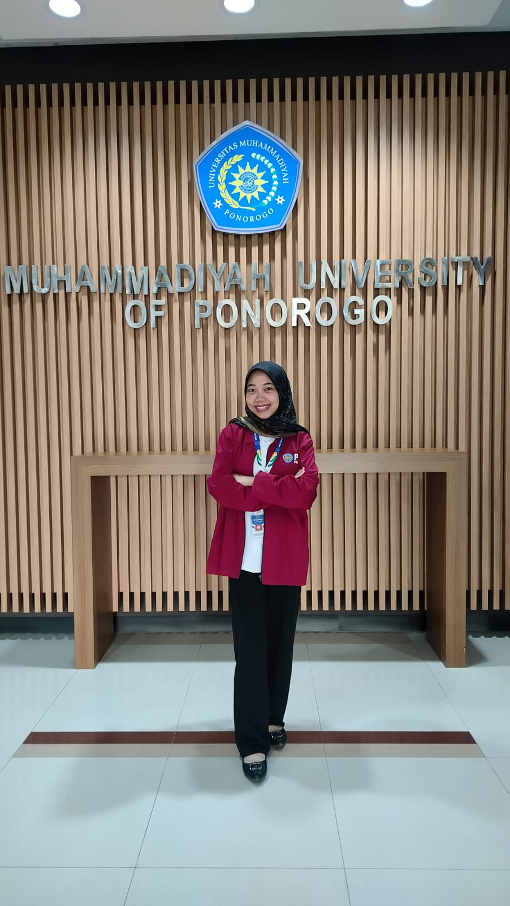
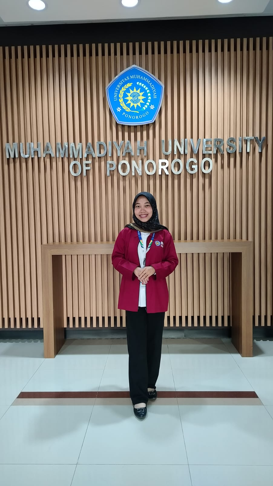

Membentuk generasi yang cerdas, berkarakter, dan siap menghadapi tantangan masa depan.
Mulai Jelajahi

Saya merupakan mahasiswa Pendidikan Profesi Guru (PPG) yang berasal dari Kabupaten Nganjuk, Jawa Timur yang dikenal sebagai Kota Angin. Nganjuk memiliki suasana yang asri, masyarakat yang ramah, serta budaya yang beragam.
Saya memiliki cita-cita menjadi guru profesional yang tidak hanya mengajar, tetapi juga mampu membimbing, memotivasi, dan mengembangkan potensi peserta didik.
Bagi saya pendidikan memiliki peran penting dalam membentuk generasi yang cerdas, berkarakter, dan mampu menghadapi tantangan masa depan. Oleh karena itu saya berkomitmen untuk terus belajar, berinovasi, dan mengembangkan kemampuan profesional sebagai calon pendidik.
Materi Filosofi Pendidikan dan Pendidikan Nilai membantu saya memahami pemikiran Ki Hajar Dewantara bahwa pendidikan bertujuan menuntun segala kodrat yang dimiliki anak agar mereka dapat tumbuh dan berkembang secara optimal. Sebagai calon guru, saya menyadari bahwa tugas seorang guru tidak hanya mengajar, tetapi juga menjadi pendamping bagi siswa sesuai potensi, kebutuhan, dan kodrat zamannya.
Selama ini saya lebih berfokus pada penyampaian materi dan pencapaian tujuan pembelajaran. Kini saya memahami bahwa pembelajaran harus berpusat pada siswa, menghargai potensi setiap individu, dan membentuk karakter.
Konsep utama yang saya pelajari adalah pendidikan sebagai proses menuntun kodrat alam dan kodrat zaman, pembelajaran yang memerdekakan, pendidikan nilai, serta guru sebagai teladan, pembimbing, dan fasilitator.
Saya ingin menerapkan pembelajaran yang lebih berpusat pada siswa, memberikan kesempatan belajar aktif, serta menanamkan nilai karakter melalui keteladanan dan proses pembelajaran.
Artefak ini menjadi bukti penerapan pemikiran Ki Hadjar Dewantara, pembelajaran berdiferensiasi, serta strategi Mindful, Meaningful, dan Joyful Learning dalam penyusunan RPP. Hal ini sesuai dengan isi dokumen yang menganalisis dan memodifikasi RPP Pendidikan Pancasila agar lebih berpusat pada peserta didik.
Buka LampiranSaya memilih artefak tersebut karena menunjukkan pemahaman saya dalam menerapkan konsep-konsep Filosofi Pendidikan dan Pendidikan Nilai ke dalam praktik pembelajaran.
Bagian analisis RPM dan hasil modifikasi RPP menunjukkan penerapan pembelajaran berpusat pada siswa, kodrat alam, kodrat zaman, pembelajaran berdiferensiasi, serta strategi Mindful, Meaningful, dan Joyful Learning. Hal tersebut tercermin dalam dokumen yang Anda lampirkan. :contentReference[oaicite:1]{index=1}